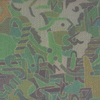
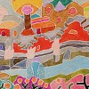
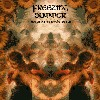

#KILLING TIME/AREPOS���̐�����o����̃\���A���o���ł��A�w�ǐ�������̓s�A�m��̂̉��t�ł����A��͂蕡�G�ȋȂ�ϔ��q�ȂǑ����ł��BKILLING
TIME�̃|�b�v�ȗv�f�����炵���悤�Ȉ�ۂ��܂��B�`�F���o�[(�����y)�Ƃ�����ȕ��͋C���L���āA��ؓ�ł͍s���Ȃ������BKILLING
TIME�̍����牉�t���Ă���Johnson Blues�Ƃ��A���ł����C���ŗǂ����Ȃ����^����Ă��܂��B

- epistrophy/variation
- waltz #2
- gymnesia
- woogee
- johnson blues
- contrarily
-
OJMTKS
- kokeraotoshi
- ojmtks i
- dark ballad
- dusk
- ojmtks ii
- habanerege
- ������o (piano,keyboards,clarinet)
- �ꂢ�� (drums on 1.5.8.)(percussion on 3.)(vocals on 8.)
- ���x�P�Y (guitars on 1.5.8.)(acoustic guitar on 3.)
- �c���� (alto sax on 1.4.5.6.8.)(bariton sax on 3.)
- �������q (violin on 1.3.5.8.)(accordion on 5.)(vocals on 8.)
- ���c�z�� (trombone on 1.3.5.6.8.)
- �n�ӓ� (bass on 1.5.8.)(bouzouki,mandocello,bandurria,bowed psaltery on 3.)
- ���T�� (steel guitar on 7-d.)
vivid sound/puff up: puf-3(1990)
#������o������i���������Ƃ������傢���Ȃ��j�I�p�r�j�A�B����CD�������[�X����܂����B
�Ƃ肠�����A1�Ȗڂ̓V���N�V���C��/�V��v�ۃW�F���g�������Ȃǂł����t����Ă����ȁB�v���C���[�̐l���������Ă���̂������Ȃ��ł��A�萔�������B
2�ȖځuPre-cambria dreamin'�v�́A���܂Ń��C���Ƃ��Łu19�v���Č����Ă�19���q�̋ȁB
���[�Ɓu�ӂ��`�i���́j�v��
BUSON��g�Ɏ��^����Ă��ȁB�����ԃC���[�W���Ⴄ�悤�ȁB
�u�q���[���N�ʁv�͑O�ɐ���+�S�{+�����̃��C���ʼn��t����Ă�A�������Ƃ����o�C�I�����̃����f�B�[����ۓI�ȋȁB�I�p�r�j�A�̃A���o���ɓ���Ƃ͎v��Ȃ������B
�uMinerals�`Tasmania�v��
��U�ɂ����^����Ă܂����ǁA������Ƃ����X�^�W�I�^���Ƃ��Ă̓R�������߂ĂɂȂ�܂��B�X�s�[�h�����L���Ă������������B
���C���Ƃ̈�ۂƊr�ׂ�ƁA�ǂ̋Ȃ����\�k���ɃI�[�o�[�_�u����Ă銴���ł��B����C������č���Ă�ȁ[�Ǝv�킹�܂��BKILLING
TIME�Ȃ�80�N��̃A�m�ӂ̉��ƁA90�N���BONDAGE FRUIT�Ƃ��̉�����肭�Z������Ă��[�Ɏv���܂��B
- ��M�̒ʂ�J -Shower (passing) of passion
- Pre-cambria dreamin'
- Crunchy brains
-
�ӂ��` (����) -Fugujiru (lukewarm)
�Œ�l variations -"The Lowests" variations
- a) part 1
- b) intrusion of pre-cambrians
- c) part 2
- (Slight) Googli-Moogli
- �q���[���N�� -Hyorokudama
- �R���u�g�� -Kombtry
- Minerals
- �`Tasmania
- ������o (keyboards,clarinet,xylophone)
- �S�{���� (guitars,bandolin)
- �F�_���m (drums,percussions)
- �������q (violin on 2.9.)
INFINITE RECORDS/TUTINOKO Lable: TUTI-0005 (2003.4.18)
#�Җ]�́B
���^�Ȃɂ��āA�uJohnson Blues�v�uGymnesia�v�uEpistrophy/Variation�v�u�͂˂ꂰ�v��
�ŏ��̃\���A�uBlivits�v�uBugmeat(=Bugdat?)�v��
KILLING TIME/BILL�A�u���e���v��
KILLING TIME/SKIP�́uOne for Each Sentiment�v�A�uWaltz
#4�v��
�֓��l�R�̃\��
���Ȃ݂ɍw����
musicterm.jp����A���̑����͔�������
POSEIDON�̂�U�y�[�W(2003.2.1)

- Blivits
- Waltz #4
- Gymnesia
- ���e��
- Epistrophy/Variation
- �͂˂ꂰ
- Johnson Blues
- Konzert op 24
- Bugmeat
- Minerals�`Tasmania
track 1-6. from 1995 MANDA-LA2
track 7-9. from 1988 INSTICK
track 10 from 1994 MANDA-LA2
- ������o (keyboards,clarinet,xylophone)
- �������q (violin,voice)
- �n�ӓ� (bass,mandocello)
- �ꂢ�� (drums,voice)
- ���x�P�Y (guitars on 1-6.10.)
- ������N (sax on 1-6.10.)
- ���{�� (trombone on 1-6.10.)
- �ߓ��B�Y (keyboards,harmonica on 7-9.)
- �c���� (sax on 7-9.)
POSEIDON RECORDS: PRF-003 (2003)

- Colours
- Waltz #3
- Ballad #1
- Ab Dance
- Meguro no Karasu
- Ballad #2
- Blumengruss
- Mayonaka
- �ꂢ�� (vocals,drums)
- ������o (piano,keyboards)
- �R�� (drums,percussions on 4.8.)
- Mecken (bass on 4.8.)
- �n�ӓ� (contrabass on 8.)
- �q�� (guitar synthesizer on 5.)
- �Y�R�G�F (guitars on 4.)
- �֓��l�Rstrings (strings on 8.)
vivid sound/Pin label: pin-02
#1995�Ɏ��g�̃��[�x�����烊���[�X���ꂽ2���ځB���C���^���ł��B
- ���ꂻ��
- ����
- BALLAD #1
- WALTZ #3
- AN ENGLISH COUNTRY GARDEN
- MORNING LIGHT
- CYFRI'R GEIFR
- PLINK
- Ab DANCE
- BALLAD #2
- HOMEWARD
- MAYONAKA
- ���E��E���E��
- ���������� -'ole i pau ka'i'ini-
- �ꂢ��(vocals,drums)
- ������o (piano,synthesizer,bass clarinet,chorus)
- �n�ӓ� (bass,mandolin,ukulele,chorus)
AREPOSONGS: AREP-05 (1995)
#���[�ƂȂ��炭AREPOS�̃��C���ɂ͍s���Ă��Ȃ��āA����ł����ɂ��܂����BPEST�Ƒo���̂�Q�̃��C���A�g�ˎ��}���_��2�ɂē���B����̓X�^�W�I�ՂŁA���\���J�Ɏd�オ���Ă܂��B������ƃ��C���̕��͋C(�O��݂�����)�Ƃ͈Ⴂ�܂��A����I�T�E���h�B��������̃����f�B�[�������オ���Ă���悤�ȃs�A�m���Ă���ϗǂ��ł��B(1999.12.14)

- RONDO
- ���� (Excursion)
- PLINK
- �������� (Revival (for Kobe))
- WELCOME
- ���t���X�R (A Blue Flask)
- �X�̒��̂܂��� (A Fleeting Glance in the Wood)
- RAINY RAG
- �[�C�̃����c (Waltz in a Deep Sea)
- HOMEWARD
- ���E��E���E��
- �ꂢ�� (vocals,chorus,drums,percussions)
- ������o (keyboards,clarinet,bass clarinet,xylophone,percussions)
- �n�ӓ� (electric upright bass on 3.6.9.10.)(electric mandolin on 3.)
- �Y�R�G�F (guitars on 1.5.6.)
AREPOSONGS: AREP-1010 (1999)
#1993�N��TV�h���}�̃T���g���ł��B9�Ȗڂ̃W�����W���E�r�[�[�̃J�o�[�͂قڂ�U��Ԃł��ˁB4�Ȗڂ��r�[�[�A���̋Ȃ�Ma*To������ۂ��Ȃ��Ǝv���܂��B
Ballad #3��Waltz #5�͌������q�����Ƃ̃f���I�B����2�Ȃ̂��߂ɓ��肵���Ƃ����Ă��ߌ��ł͖��������B����Ballad
#3�̐[�C�݂����ȕ��͋C���ƂĂ��ǂ������B�������q����Ƃ̃f���I�Ń��C���Ƃ����Ȃ����ȁ[�H�Ȃ�Ďv���B
- OLE ORA
- ���̋����`�ڂ���̋x���`
- Ballad #3
- CARMEN REMIX
- ���̋����`���܂���ȋ�Ɍ������ā`
- Blue in Twilight
- HABANERA
- WALTZ #5
- �N�����Ȃ�<TV version>
- �N�����Ȃ�<instrumental>
- ���̋����`�X�̓J�[�j�o���`
produced by �ߓ��R�I�v,�������t
composed by ������o (3.6.)
composed by Georges Bizet (4.10.)
track 3.
- ������o (piano)
-
�������q (violin)
track 4.
- ������o
-
���䏫�o (synthesizer programming)
track 6.
- ������o (piano,bass clarinet,marimba,synthesizer)
-
�������q (violin)
track 9.
- ������o (piano,bass clarinet)
- �ꂢ�� (drums,percussions)
- ���{�� (trombone,trumpet)
- �Y�R�G�F (guitars)
- �������q (violin)
-
�n�ӓ� (bass)
track 10.
- ������o (piano,marimba)
- �������q (violin)
B-Gram RECORDS: BGCH-1002 (1993.6.30)
#���ȁA������o����̋Ȃ��L��܂��B�Ȃ��t��]��������[�ȕs�v�c�Ȑi�s�̋Ȃő��ς�炸�ʔ����ł��B�ȂX�g�����O�̋�(13)�Ƃ��q������̉e�����L��悤��....
���̋Ȃ�Maire
Breatnach���قƂ�ǂŁA�A�C���b�V���g���b�h���ۂ��Ȃł��B������o����̃g���b�N�Ƃ͐������͋C���Ⴂ�܂����ǁA�����������\�ǂ��ł��B
6�Ȗڂ́u�������߂Ă��Ă�v�͗�؏ˎq����̋Ȃł��B���\�D���ȋȁB
���Ȃ݂ɓ��{�e���r�̃h���}�������炵���ł����ǁA�S�R���Ă܂���B����j�Y�Ƃ��o�Ă��݂����B(2002.1.13)

- HOME
- FANATIC LOVE-I
- PLACEBO
- IN THE BLOWING WIND (move)
- SOLITUDE
- �������߂Ă��Ă� (piano version)
- Q SIGN
- PASSION
- CROSSROADS
- 3�K�̃x�����_
- PEACE & BROKEN
- FANATIC LOVE-II
- OCCUPATIONAL HAZARD
- DEEP RIVER
- �������߂Ă��Ă� (instrumental version)
- HOME, AGAIN
- IN THE BLOWING WIND (still)
produced by �ߓ��R�I�v,�������t
Maire Breatnach (1.2.4.5.8.9.12.16.17.)
������o (3.7.10.13.)
��؏ˎq,���c���� (6.15.)
MOKA (11.)
�|���ӐL (14.)
WARNER MUSIC JAPAN: WPC6-8494 (1998.8.26)